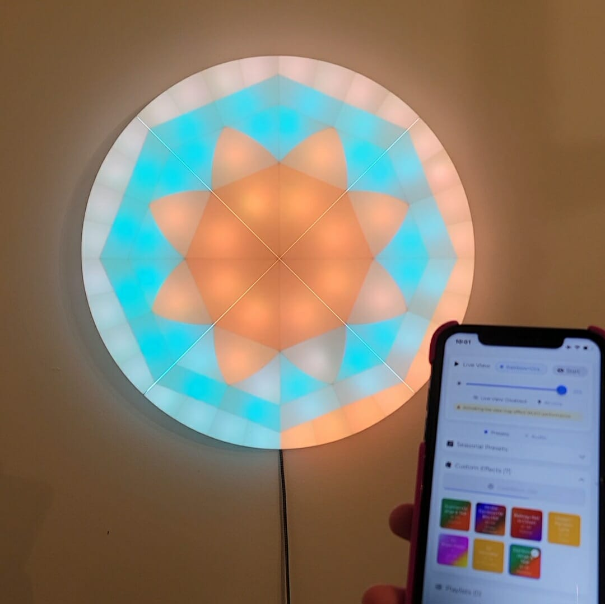
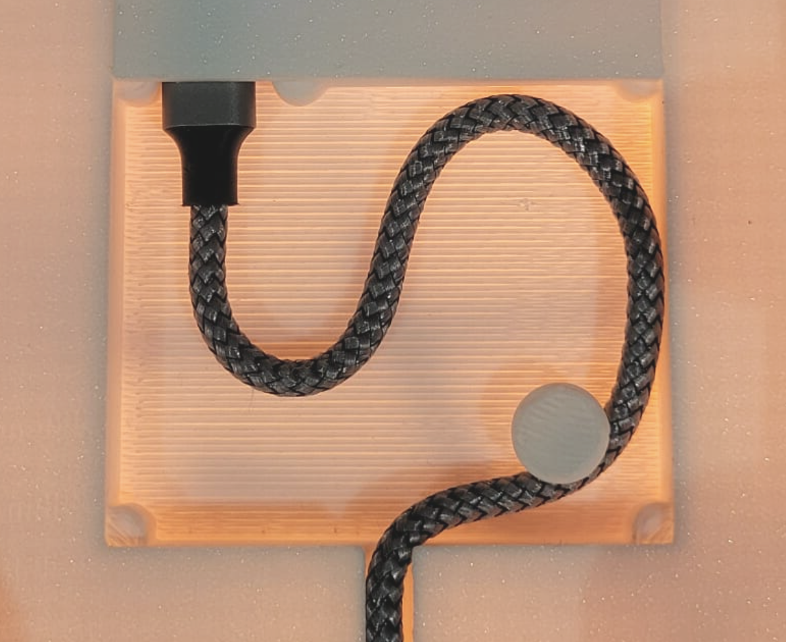

Your Starlite is now powered on and running. You can use it with the default settings or proceed to Advanced Setup for full control.
For advanced control and customization, you'll need the Kolori mobile app. Follow the steps below to get started.
Try the passwords in order. The first one (starlite4321) is most commonly used.
When you open the Kolori app for the first time, you'll see the onboarding page.
1. Tap "Add Device Manually"
2. Enter device name (e.g., "Starlite")
3. Enter IP address: 4.3.2.1
4. Tap "Save"
Your Starlite is now fully configured. Enjoy creating amazing lighting displays!